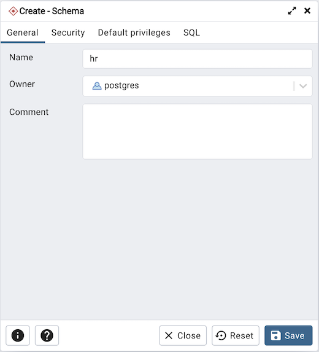
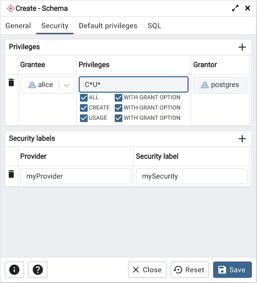
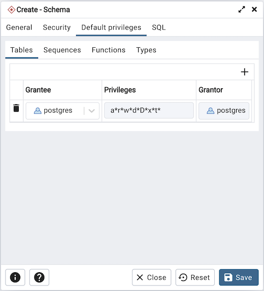
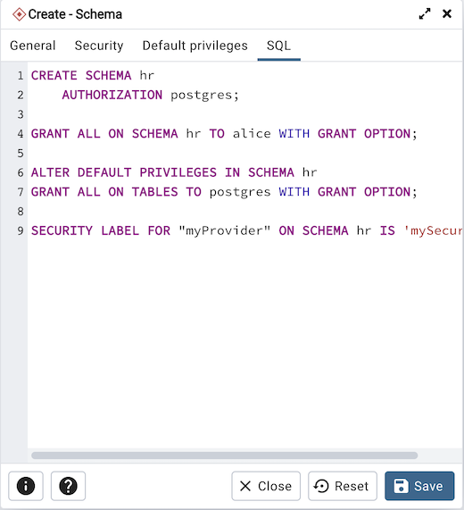

Schema Dialog¶
Use the Schema dialog to define a schema. A schema is the organizational workhorse of a database, similar to directories or namespaces. To create a schema, you must be a database superuser or have the CREATE privilege.
The Schema dialog organizes the development of schema through the following dialog tabs: General and Security. The SQL tab displays the SQL code generated by dialog selections.
Use the fields on the General tab to identify the schema.
Use the Name field to add a descriptive name for the schema. The name will be displayed in the pgAdmin tree control.
Select the owner of the schema from the drop-down listbox in the Owner field.
Store notes about the schema in the Comment field.
Click the Security tab to continue.
Use the Security tab to assign privileges and security labels for the schema.
Click the Add icon (+) to assign a set of privileges in the Privileges panel:
Select the name of the role from the drop-down listbox in the Grantee field.
Click inside the Privileges field. Check the boxes to the left of one or more privileges to grant the selected privileges to the specified user.
The current user, who is the default grantor for granting the privilege, is displayed in the Grantor field.
Click the Add icon (+) to assign additional sets of privileges; to discard a privilege, click the trash icon to the left of the row and confirm deletion in the Delete Row popup.
Click the Add icon (+) to assign a security label in the Security Labels panel:
Specify a security label provider in the Provider field. The named provider must be loaded and must consent to the proposed labeling operation.
Specify a a security label in the Security Label field. The meaning of a given label is at the discretion of the label provider. PostgreSQL places no restrictions on whether or how a label provider must interpret security labels; it merely provides a mechanism for storing them.
Click the Add icon (+) to assign additional security labels; to discard a security label, click the trash icon to the left of the row and confirm deletion in the Delete Row popup.
Click the Default Privileges tab to continue.
Use the Default Privileges tab to grant privileges for tables, sequences, functions and types. Use the tabs nested inside the Default Privileges tab to specify the database object and click the Add icon (+) to assign a set of privileges:
Select the name of a role that will be granted privileges in the schema from the drop-down listbox in the Grantee field.
Click inside the Privileges field. Check the boxes to the left of one or more privileges to grant the selected privileges to the specified user.
The current user, who is the default grantor for granting the privilege, is displayed in the Grantor field.
Click the SQL tab to continue.
Your entries in the Schema dialog generate a SQL command (see an example below). Use the SQL tab for review; revisit or switch tabs to make any changes to the SQL command.
Example¶
The following is an example of the sql command generated by selections made in the Schema dialog:
The example creates a schema named hr; the command grants USAGE privileges to public and assigns the ability to grant privileges to alice.
Click the Info button (i) to access online help.
Click the Save button to save work.
Click the Close button to exit without saving work.
Click the Reset button to restore configuration parameters.